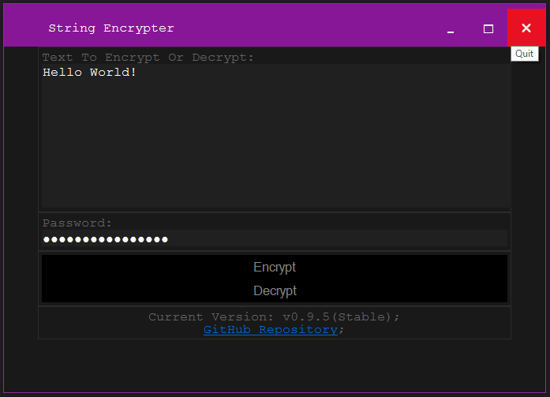

Hello there!
My name is Gian Singh Sarao, I'm a self-taught Web Developer, and this is my portfolio.
But first, just a little bit more about myself!
My nickname is Orange...
work I am currently Looking for work (ideally 100% remote)...
home I live in Leicester (which is a city in the UK)...
You can contact me:
email
via email: Awesome
chat or via Keybase
What follows is even more stuff about me, but it's not as important.
So you can either carry on scrolling to learn more about me, or you can skip to my portfolio
- My first computer was a...
-
Dell Inspiron 531
...which, I still use. Just for backups mainly.
It has a dual-core Athlon CPU (AMD Athlon 64 X2 5000+ @ 2.6 GHz) and an ATI GPU (ATI Radeon HD 2400 PRO).
It originally came with only 2GB of RAM, but has since been maxed to 8GB (4 two gig sticks of some DDR2-537, Samsung I think).
Other modifications include: a replacement PSU, a new NIC, and new hard drives.
My first experience with both windows, and linux was with this machine.
It had Windows Vista pre-installed, and when the PSU died, the repair-tech upgraded it to Windows 7.
When one stick of RAM died and Windows 7 wouldn't boot, I removed the dead stick, and used a Knoppix LiveCD from a copy of the Linux Bible 2009 edition borrowed from my local library.
When I accidentally erased the Windows install, I installed OpenSUSE.
Once the RAM had finally been replaced, I installed Windows again (8.1 this time).
And once the RAM was maxed out, I installed Windows 10.
Preferred Code Editor: VSCodium/Code-Server
Preferred Languages: JavaScript, PowerShell
Portfolio
This page is supposed to be a list of projects I have worked on. So far, I have no serious projects. None. All I have are this page and a couple of odd side projects that I worked on for a while then ran out of motivation to finish up. Though seeing my own projects on here does occasionally motivate me, so I might as well list my side projects here. Feel free to flick through the Git repositories. Who knows? Maybe you might find some interesting oddities.
The String Encrypter
A simple encryption app made exclusively for strings of text, written using HTML, CSS, and JavaScript, for use as an HTA.
Initially, The result of following an ancient tutorial (Hooray for backwards compatibility!) about HTML Applications, this experiment has grown more than I intended. See the complete backstory for more details.